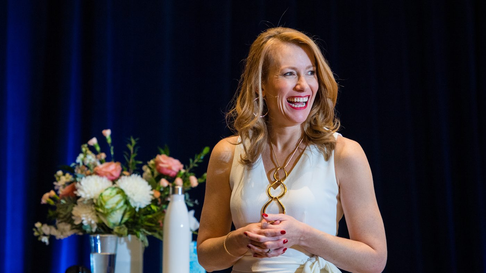
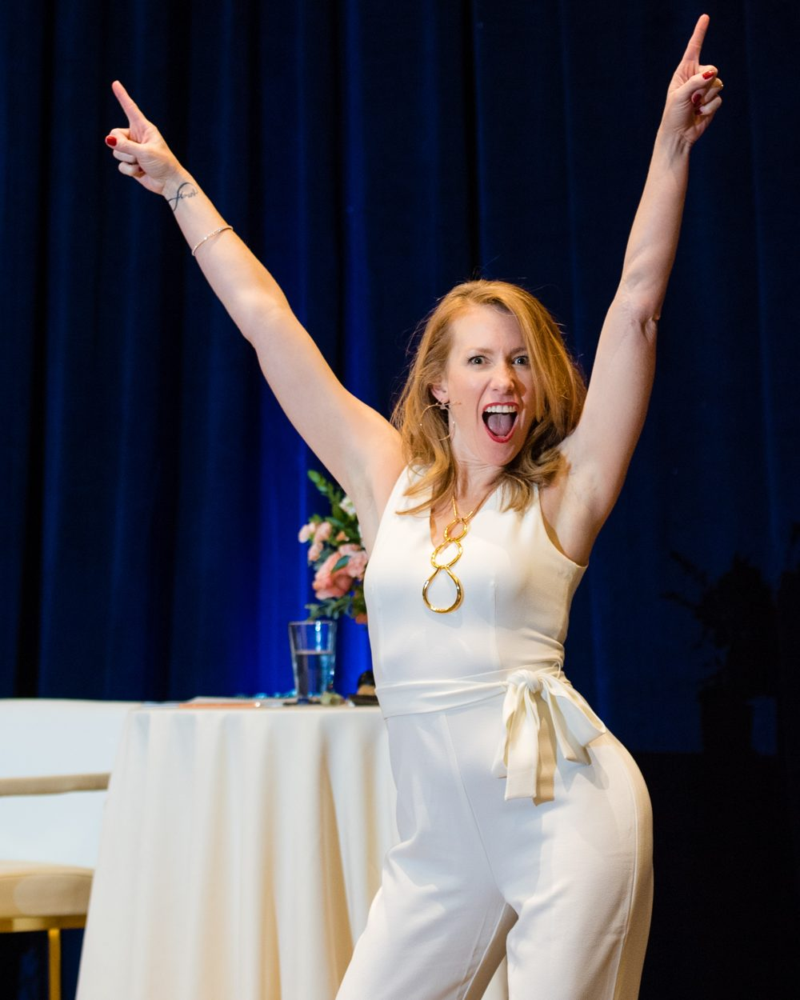

An eight-week course to clear your money blocks, with Tamara Rose
Living Beyond Wealth and Abundance
Clear the money blocks that have been stopping your money flows, step into your power and let the money come in with more ease, in eight weeks or on your own time.
If you've done the budgets, read the books and worked on your mindset, but for some reason money still feels hard, tight or like you can't quite get it… most likely you're not dealing with a strategy problem; it's an energy problem, a money block.

As a retired type A perfectionist, I built the quickest, most efficient way I know to get someone from point A to point B, without all the fluff.
Maybe these money blocks sound familiar…
You check your bank account, and your stomach drops every time.
You look at the menu, but your eyes immediately go to the right side, choosing what you can afford instead of what you want.
You work hard for every dollar you've earned, but you've never really experienced money working for you.
Every time you make a decision, money comes into play, and it feels hard and heavy; unless you have a really good reason, you say no.
The truth is, money is just energy, and so are you…
Money moves like water, a river flowing when nothing blocks it, and your money flows work exactly the same way; if a money block is in the way, it isn't coming to you. Most of the time, money is just numbers on a screen, a card in your pocket or a check in the mail, and very rarely dollar bills changing hands. So what decides how it flows is actually your energy: your thoughts, your feelings and your actions, plus the judgments and points of view you've picked up from your family and everyone around you. Together, those create the paradigm you live in.
Most of us were taught a few things about money: it's better to give than to receive, and you always have to prove your value and your worth to feel like you have a place in this world. The more I talk to people, the more I discover they're always talking about money as something out there, separate from themselves, something we have to control, chase and try to get. And every time I talk to somebody who wants more money, it's never the money they want; they want the freedom it gives them and the ability to say yes to the things they truly want and desire in life.
Welcome to Living Beyond Wealth and Abundance, my proven methodology that walks you through, week by week, clearing the money blocks and old energy around money from your past and aligning you in the reality you really want.
Your eight weeks…
- Week1
Learning Energy
Learn to sense energy and see how your thoughts, feelings and actions are creating what you have right now.
- Week2
Your Foundation of Wealth and Abundance
Uncover your money game: how money flows to you and out from you, how you receive it and how you hold on to it, then complete last year's money so you start clean.
- Week3
A New Abundance Paradigm
See the life you'd choose if money went all your way, find the gap between there and here, and learn my two-part alignment technique to close it.
- Week4
Aligning in Your Power
Discover how the universe matches your field and the power of your "I am," with the "I Am" Presence guided meditation.
- Week5
Freedom from Your Money Past
Clear the money blocks you took on from everyone else, the judgments and points of view about money, with your clearing sheet and the full recorded group money clearing session, over two hours long.
- Week6
Living Beyond Human Money Limitations
See how the money game is really played, and how to stop treating money as something separate from you.
- Week7
Ease with Money Choices
Stop deciding from scarcity and calculations; find your strongest intuitive channel and make money choices from it.
- Week8
Abundance and Wealth Accelerated
Move from doubt, wish, want and hope into trust, faith and surrender, so what you're asking for can come in faster, with a 15-minute Money and Abundance Visualization.
Everything you get…
- Eight video trainings, each with an audio version, to learn on your own time, at home or on a walk
- A workbook inside every lesson, plus a printable copy, to write your way into a new money reality
- The Know Your Money Spreadsheet, to see exactly where your money comes from and where it goes
- A full group money clearing session, audio and video, to come back to and clear money blocks any time money feels heavy
- Two guided meditations, the "I Am" Presence and the Money and Abundance Visualization, to feel abundance in your body, not just think about it
- A starting point, halfway and completion check-in, to see for yourself how far you've come
- The 20-Day Meditation Series, free with your community access, to build a daily practice that lasts
Is this for you?
This is for you if…
- You're ready to stop chasing money and let it come to you
- You've tried the strategies, but money blocks still keep money tight or stressful
- You want to make money choices from trust instead of fear
- You're curious about energy and what's possible when you work with it
Living Beyond Wealth and Abundance
- Eight weeks of video, audio and workbooks to clear your money blocks
- A full group money clearing session and two guided meditations
- The Know Your Money Spreadsheet
- Everything open from day one, yours for life
Your investment
$497
I'm ready for more ease with moneyOne payment · 7-day money-back guarantee · instant access
I've read the books, taken the courses, gotten the certifications, and done tons of work with clients around money. Tamara's philosophy is like nothing I've seen anywhere, ever. Her approach is simple to put into practice and yields results that last!
From women I've worked with on money
Sales are easy, my job is easy, clients are all well cared for. Money is easy. It's a very cool experience.
Working with Tamara has literally been the best money I have ever spent. Every area of my life is shifting, things are getting created with more ease, and I am making more money.
I started the program wanting to create $15,000 of completely unexpected, unearned money. I have now manifested more than $16,000 out of thin air!

Your guide
Hi, I'm Tamara Rose…
At 29, I had a big bank account, four properties and the number one sales spot at my company, and I still felt completely trapped. Years later I turned $80,000 of debt into a seven-figure business, and the biggest shift wasn't a new strategy; it was learning to work with my energy around money.
Living Beyond Wealth and Abundance is the same money training my Divine Self Mastery clients go through in their first year, and you can start it today.
Curious what's running underneath your money for you? Everybody has a primary pattern, it's unique to you, and it shows up in your money too; what's your flavor of it? That's what we find together in your Energetic Alignment Audit, a private 90-minute session with me.
Before you start…
What is a money block?
A money block is old energy around money: the thoughts, feelings and judgments you picked up from your family and everyone around you that keep money from flowing to you. Living Beyond Wealth and Abundance helps you find yours and clear them, week by week.
How much time does it take each week?
Each week has one video, between 15 and 44 minutes, with an audio version, plus a workbook you can take at your own pace. Everything is open from day one, so you can take a week at a time or move faster.
Is this financial advice or a budgeting course?
No. Living Beyond Wealth and Abundance works with your energy around money: your thoughts, feelings and actions, the points of view you took on from others and the choices you make. It isn't financial, tax or investment advice.
Where does the course live?
Inside The Next Evolution, our private community, on your phone or your laptop. Right after checkout you go straight to your Welcome lesson.
What if it isn't right for me?
Living Beyond Wealth and Abundance is backed by a 7-day money-back guarantee. If the course isn't right for you, email us within 7 days of purchase for a full refund. The details are in our terms.
How long do I have access?
For life. Come back to any week, clearing or meditation whenever money feels heavy.
Is this part of Divine Self Mastery?
It's the same money training my Divine Self Mastery clients go through in their first year. Start here; when you're ready to go deeper, Divine Self Mastery is where we get to the root of what's underneath.